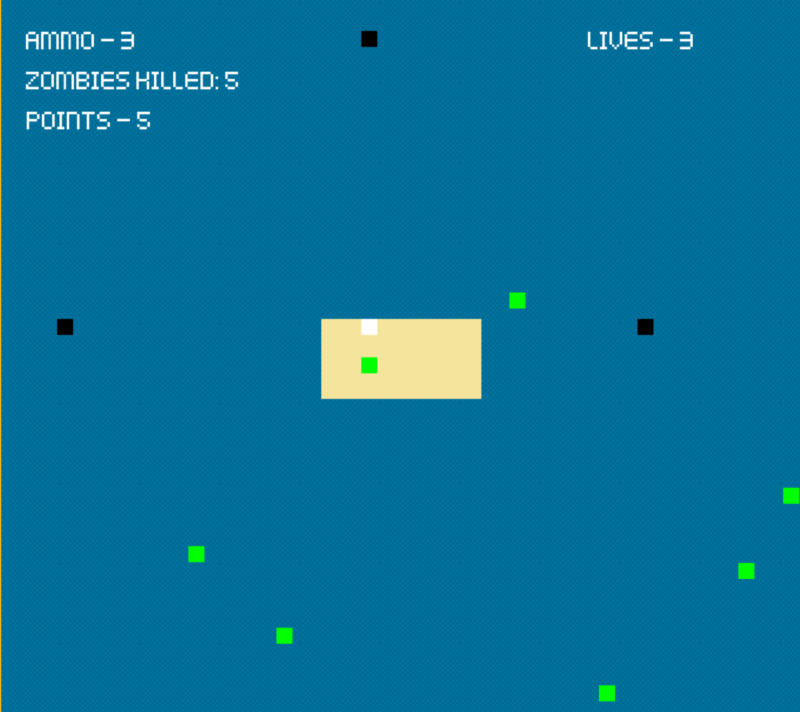
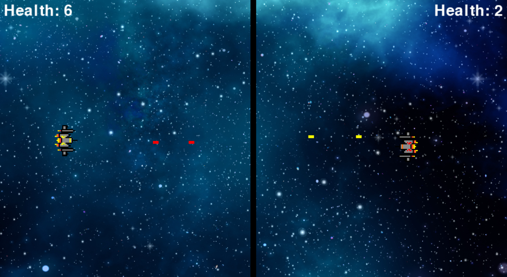
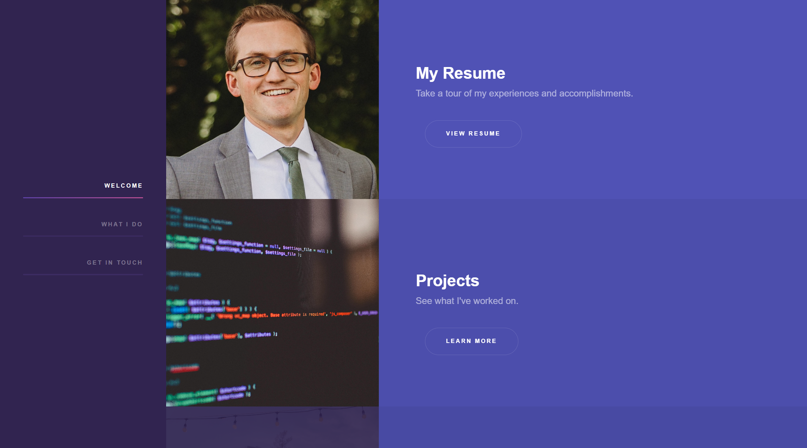

My Projects
GitHub
A timeline of what I've worked on. Click on the bolded project titles to view a project.
-Dakota Dowd
The Island Game
Summer 2025
The Island Game is a video game that I designed and programmed from scratch. It came from one of those midnight sparks of inspiration: What if I made a game where the player must expand their island over time to survive an onslaught of pirate zombies? That fun little idea threw me into a world of game development where I had to learn how to read documentation, plan out the structure, and then turn my idea into reality. I learned a lot about object-oriented programming, design, testing, and bringing a vision to life. While AI was used on a limited basis, (mostly to summarize Pygame's documentation), every line of code is my own. I plan to continue to add more features to this game in the near future.
Spaceship Game
March 2025
A Video Game I made with the Pygame module while following a tutorial. I still have a lot to learn about Pygame, but this helped me get a feel for the process of making a game.
Object Oriented Programming: Soccer Tournament
March 2025
This is an assignment that I did in my college python class, demonstrating my understanding of object oriented programming. It's a program that accepts a few inputs, generates random scores for teams and outputs the results of a soccer tournament.
My Website
Jan 2025
The first major programming project that I have done entirely on my own is my personal website. After taking an introductory course in Information Systems, I applied my new knowledge and made a website for myself. I've learned how to find and apply new html templates, and then edit and rearrange them. I've loved this project. It has been, and still is, under constant refinement.
School Project First Website
Dec 2024
My first attempt at using HTML and CSS resulted in my final project for my IS201 (Information Systems) class. Here you can see the website I created from scratch, where I learned (through a lot of trial and error) how to position and arrange the website, as well as how to embed a Youtube video and a Tableau dashboard. From this landing page, you can access my first resume as well as a game that I created with AI.